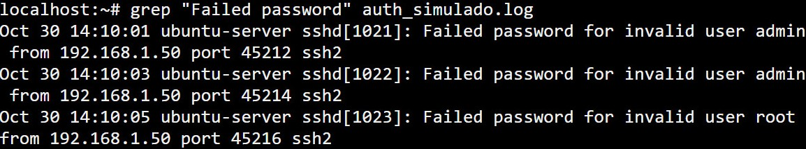

Introducción a los logs de seguridad

Los logs de seguridad son registros que almacenan eventos producidos por un sistema, aplicación o dispositivo de red. Estos logs permiten reconstruir actividades y estudiar incidentes.
¿Qué información contienen?
Aunque el formato puede variar según el servicio, un evento estándar en los sistemas Linux suele contener los siguientes campos:
- Fecha y hora exacta en la que ocurrió el evento.
- Nombre del host donde se originó el registro:
- Servicio y PID y su identificador.
- Mensaje o descripción
2. Caso práctico: Detectando ataques de fuerza bruta
Imaginemos que un atacante está intentando acceder a nuestro servidor a través del protocolo SSH probando contraseñas al azar. Nuestro sistema registrará todos esos intentos fallidos.
Para no tener que leer miles de líneas manualmente, podemos utilizar las herramientas de consola
que vimos en el laboratorio de comandos básicos en linux, combinando comandos como cat o
leyendo directamente
el fichero con grep para filtrar patrones específicos.

3. Extrayendo la información con grep
En el ejemplo de la imagen, hemos analizado un fichero de autenticación buscando la cadena
"Failed password". Esto nos permite aislar el ruido y centrarnos únicamente en
las conexiones rechazadas.
Al observar el resultado, un analista de seguridad puede extraer conclusiones valiosas:
- Usuarios atacados: El atacante está probando credenciales por defecto como
adminoroot. - Origen del ataque: Los intentos provienen de la misma dirección IP (192.168.1.50).
- Frecuencia: Los intentos ocurren en intervalos de apenas un par de segundos, lo que confirma que es un proceso automatizado (un script o bot) y no un error humano.
A partir de esta confirmación, la medida defensiva inmediata sería bloquear esa dirección IP en el firewall del servidor.
Cómo empezar a analizarlos
Primero se identifica el origen del registro y el periodo de tiempo que se quiere estudiar buscando patrones, comparando y buscando una explicación.
Un único evento no demuestra necesariamente que exista un ataque. Pero siempre hay que estar alerta y analizarlos mientras se usan otras herramientas.